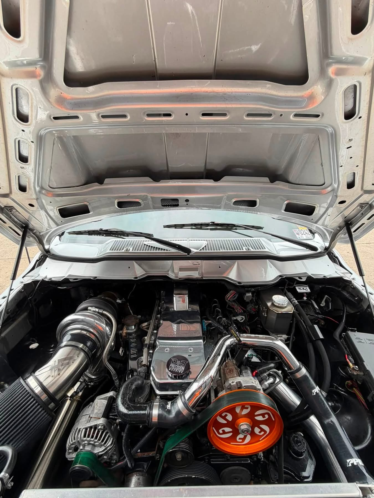
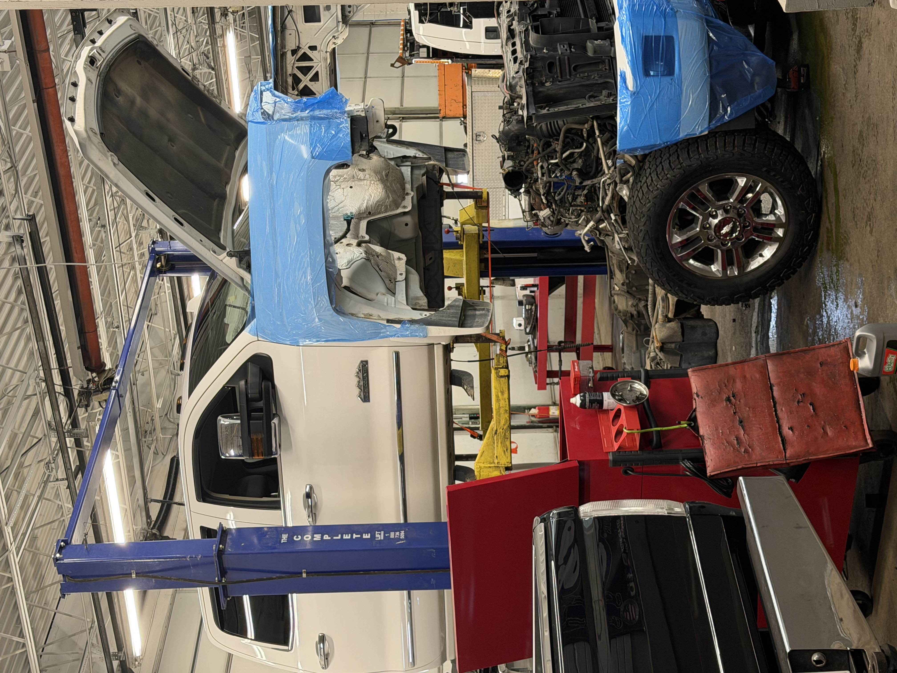
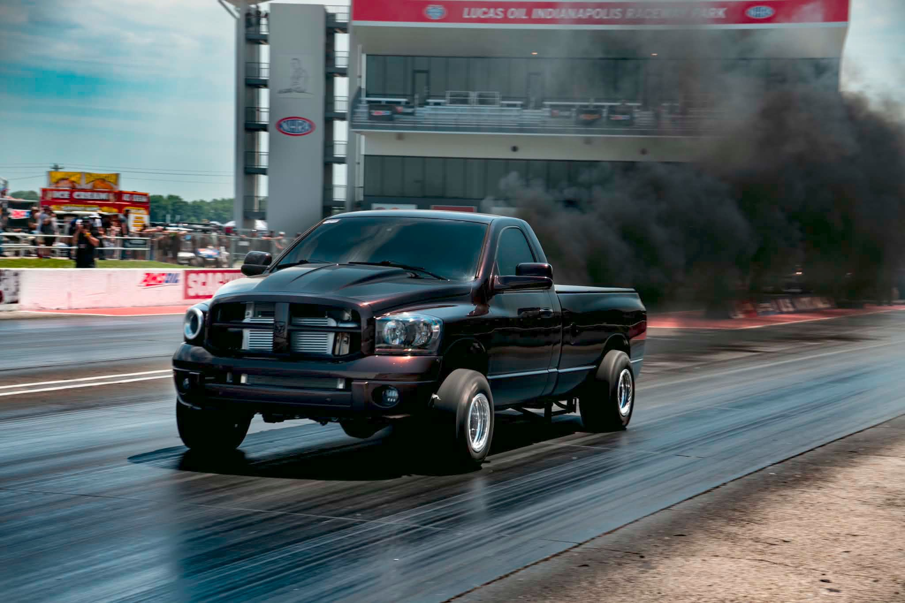
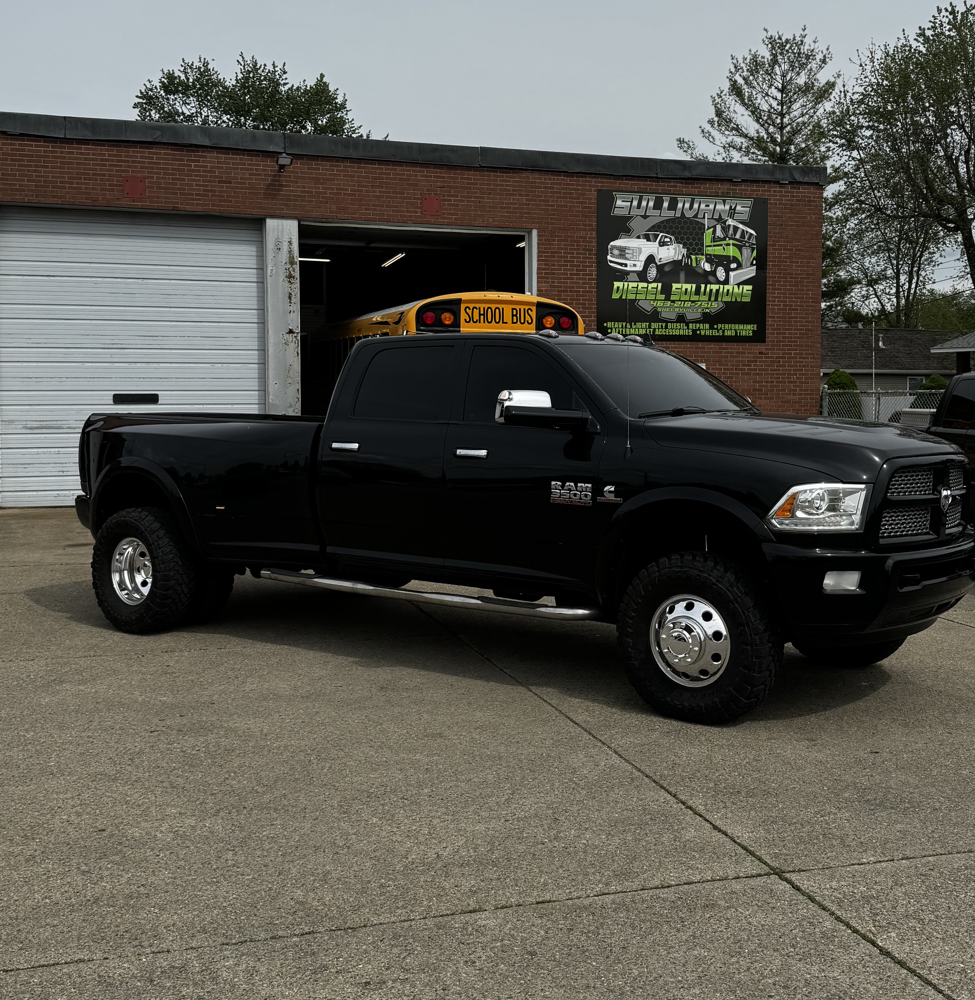

Diagnostics
Electrical issues, no-start problems, fault code tracing, and hard-to-find drivability concerns.

Diesel Repair | Diagnostics | Performance
Sullivan's Diesel Solutions keeps pickups, semis, and working fleets running with dependable repair, honest troubleshooting, and a shop identity that is impossible to miss.

What We Do
Electrical issues, no-start problems, fault code tracing, and hard-to-find drivability concerns.

Turbo, fuel, cooling, suspension, brake, and general mechanical repair for working diesel vehicles.

Upgrades, tuning-focused support, and diesel solutions aimed at strength, reliability, and clean power delivery.

Preventive maintenance planning to keep downtime low and your trucks on the road longer.

Why Sullivan's
Sullivan's Diesel Solutions has a rich history of providing top-notch repair services for pickup trucks and semis. Our commitment to quality and customer satisfaction has been unwavering.
Book Service
Call or message Sullivan's Diesel Solutions to get your truck scheduled and back on the road.